12 studies · 1920 × 1080 · 30 fps · 300 frames · 10 seconds · H.264 / yuv420p
Seven current native-resolution procedural renders and five preserved original videos. No audio or human aesthetic approval is claimed. Serve this gallery using python tools/serve_gallery.py from the package root; seeking requires HTTP byte ranges.
Evidence and reproduction · Manifest
Preserved original 1080p bytes
metaball 融合/次级液滴延迟 2-3 帧 (流体融合)
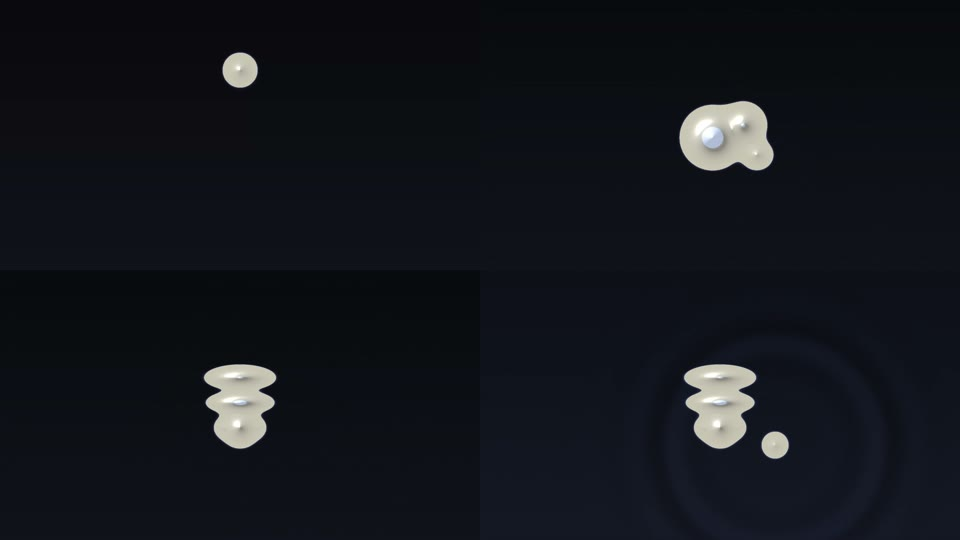
Current native 1080p render
Fixed-angle isometric library; six books return to their shelves; visible three-sided books, bounded occlusion, actual CJK floor text and a continuous final pullback.
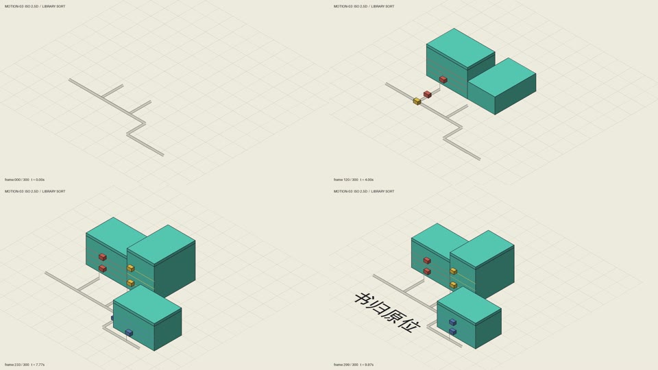
Current native 1080p render
Synthwave midnight-radio title: striped sun, perspective grid, chrome CJK lettering, restrained scanlines and RGB separation.
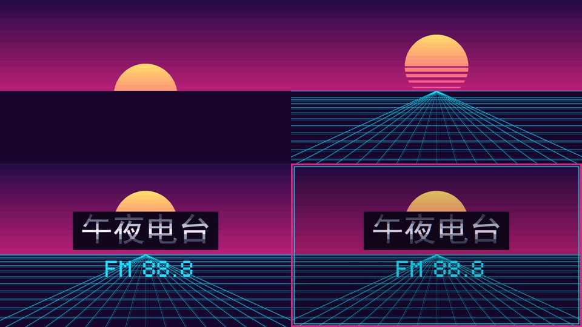
Current native 1080p render
Connected outline morph: bulb → bubble → pencil → star, circle mediators, bounded squash/stretch and final hold.
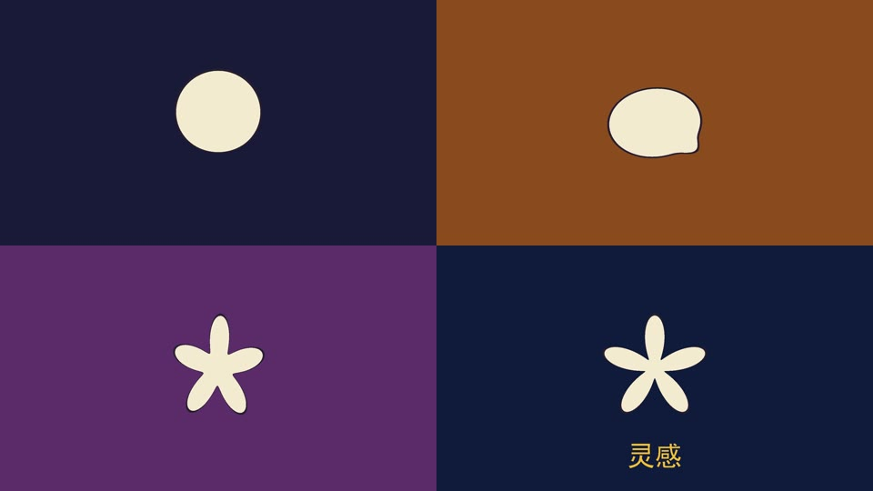
Current native 1080p render
Bauhaus grid composition: primary-colour geometry, mechanical beat-aligned movements and final poster hold.
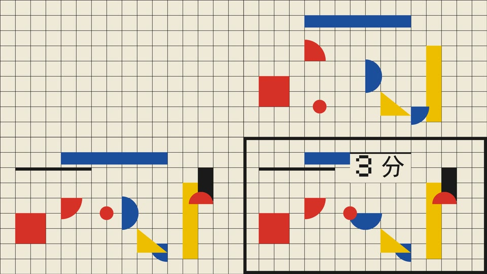
Current native 1080p render
Science-fiction HUD linework: deterministic five-frame ticks and a whole-state cyan-to-orange change.
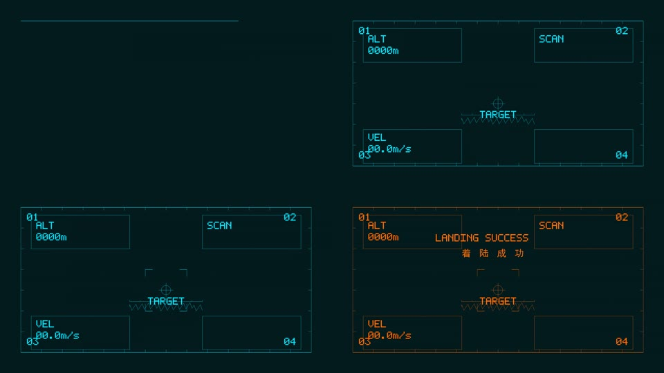
Current native 1080p render
Glassmorphism over a moving blurred aurora light field; restrained highlights, native-resolution CJK text and final hold.
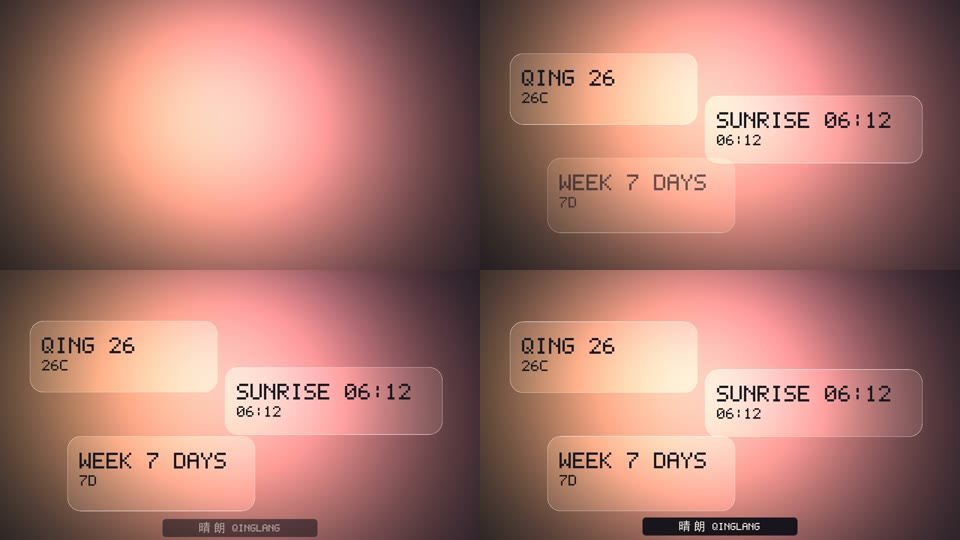
Preserved original 1080p bytes
2-4px 白描边/12fps ±2px 抖动/嘴巴替换帧 (剪纸拼贴)
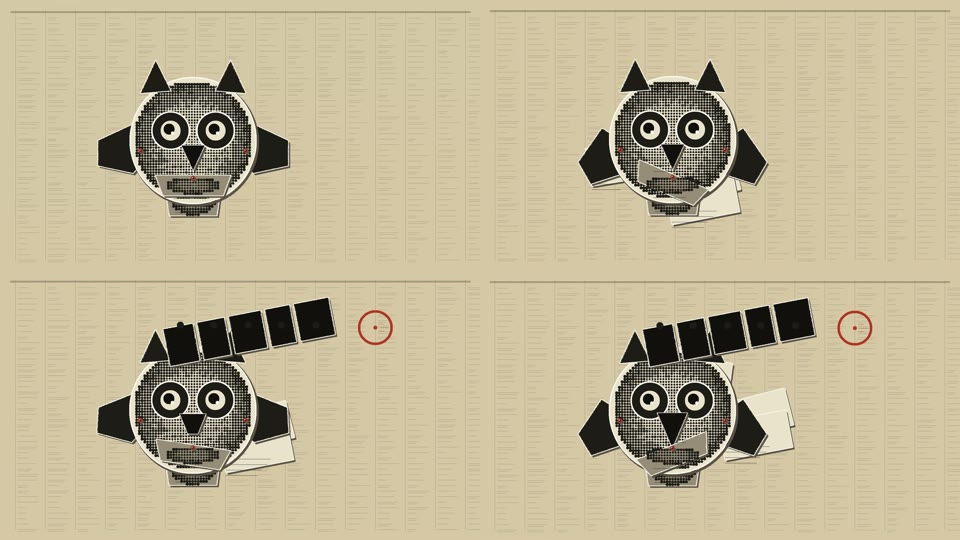
Preserved original 1080p bytes
3-4 张微差线稿循环/一拍二 12fps/1 帧 smear (手绘 boil)
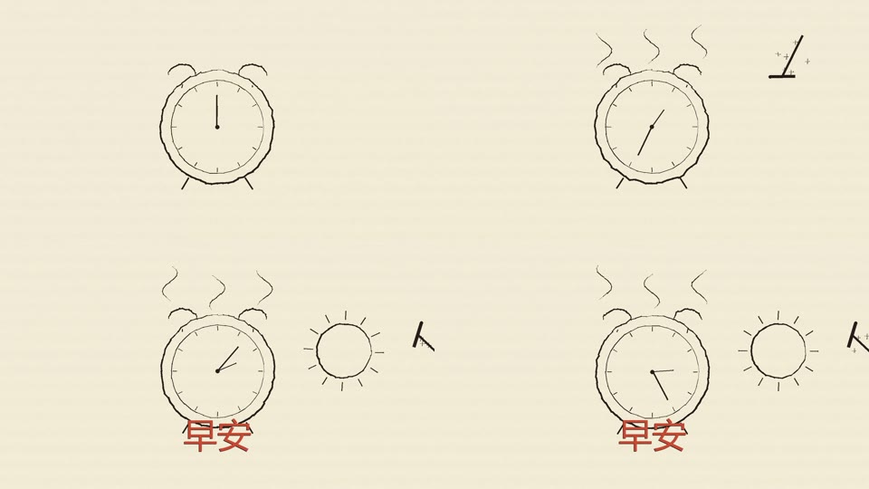
Preserved original 1080p bytes
stagger 2-4 帧/squash&stretch ~10% (矢量错帧)
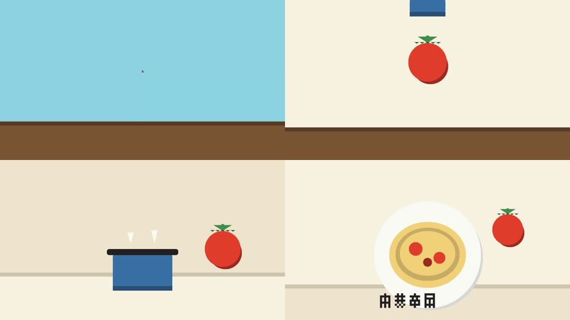
Current native 1080p render
Water-distribution editorial animation using rounded USGS categories; continuous float camera with final pixel cropping.
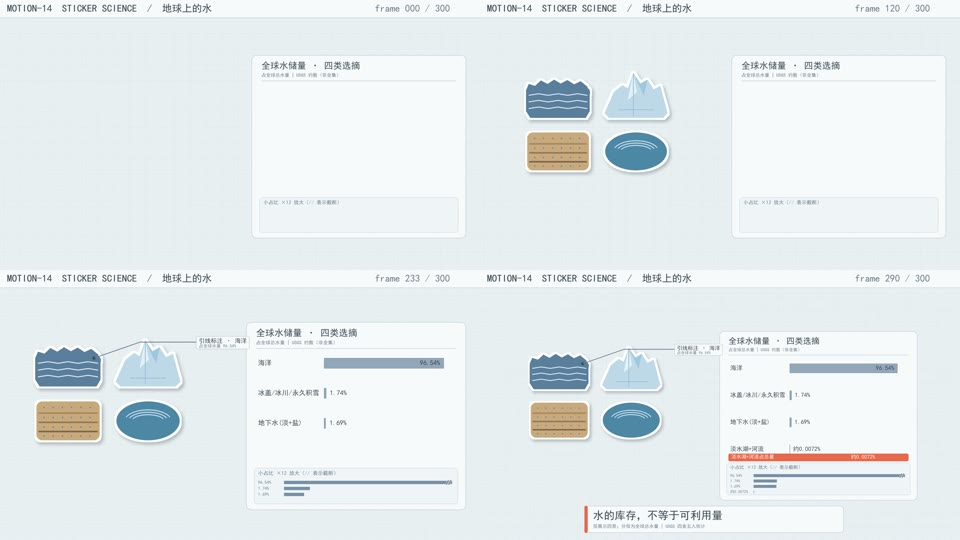
Preserved original 1080p bytes
pop 0→1.15→1.0 ~8 帧/2-frame stagger (花字弹跳)